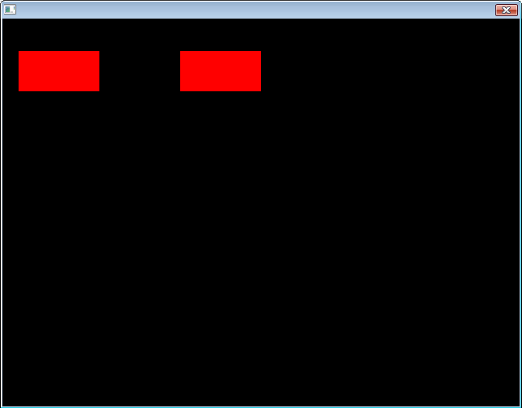
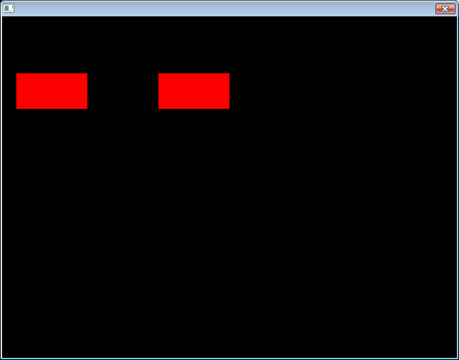

Table of Contents
What is this?
"XPLOsion" is short for "XML Program Layout Organizer".
This class allows you to load XML files or trees that contain information about how your program's GUI
should appear. This class converts that information into GUI elements that are native to irrlicht.
After the program's GUI has been loaded, you can safely delete this class without the risk of
losing the interface and thus save heap space.
The format of the XML files is meant to be similar to HTML and complimented with files that are
formatted similar to CSS. The layouts of the files are identical to their web counterparts with the
exception of the commands being different. See format for details.
To set up the GUI elements, the function IGUIElement::deserializeAttributes() is utilized.
The parameters for the GUI elements are given as CSS parameters (such as "position", "left", "right", "overflow").
Order of function calls
XPLOsion::XPLOsion( irr::IrrlichtDevice*, bool =false )XPLOsion::setCSSDataPointer( CSSLibrary* ) optionalXPLOsion::setFunctionFireList( GUIFunctionFire* ) optional- For loading by files:
XPLOsion::LoadFile( irr::io::path )
-OR-
XPLOsion::setXMLDataPointer( irrXMLStorage* )
optional
XPLOsion::ParseFile( irr::gui::IGUIElement* =0 )
- For loading straight from an irrXMLTreeNode:
XPLOsion::TranslateXMLNode( irrXMLTreeNode*, irr::gui::IGUIElement* , bool =false )
<Type
class="class_name"
id="id_name"
[anything else]="style_tag_name"
style="css_style"
onClick="function_id"
>
Text
</Type>
- Type - Instead of the node type, the name of the GUI element is here.
A list of valid GUI element names to be used as type names is available.
- class - Each node may have a single class reference, which means XPLOsion will search the CSS library for
the appropriate class with matching name.
- id - Each node may have a single id reference, which means XPLOsion will search the CSS library for
the appropriate id with matching name. NOTE: This is NOT the same as irrlicht's ID for GUI elements,
which can be set as a parameter in the CSS file.
- [anything else] - Each node may have as many randomly named attributes as they wish. These attributes
must not be given the same name or subsequent identical ones will be ignored. Each time one of these attributes is found,
the CSS tag whose name matches the given value is applied to the GUI element, as it is with "class" and "id".
However, preference cannot be made as to whether a class or an id is searched for, and thus the first
match will be returned.
- style - Each node may have a single attribute (this one) interpreted as CSS parameters.
This allows for XPLOsion to do inline styling without the need of a pre-assigned or preloaded CSSLibrary.
- onClick or onPress - Analogous to HTML calling of a Javascript function except that
in this case, the function association is handled by the class GUIFunctionFire.
Valid XML Type Names
Type names are case-sensitive.
It is helpful to note that the CSS parameters that apply to all GUI elements are:
- position
- left
- right
- top
- bottom
- height
- width
- Rect
- Id
- Visible - Defaulted to true
- Enabled
- Caption
- TabStop
- TabGroup
- TabOrder
The parameters left, right, top, bottom, height, width, and Rect do essentially the same job and thus
it is not required that all be defined.
As an aside, divs do not utilize the parameter Enabled.
div
Creates a divBox instance that acts like a division in HTML. It can be assigned a background color and/or image;
clicked on to activate an assigned function as buttons do (requires using GUIfunctionFire class); and handles overflow
of other elements with scroll bars based on overflow.
CSS Parameters received (beyond those that apply to all):
- position - While all GUI elements will have "position" applied to them, only this class stores it.
- background-color - Sets the background color of the division.
- background-image - Sets the background image of the division. Requires a path be given.
- background-repeat - Indicates how the background image is to be repeated over the back
of the division.
Note that the background image will not overflow the division, but, at the current time, it does not move
with scrolling.
- overflow - Indicates how to handle the displaying of child nodes when their positions are
outside of the display boundaries of this division.
- Border - Indicates whether to have an outline around the division.
- outline-color - Indicates what to color the outline around the division if there is an outline
(which is set by "Border").
- scrollbar-width - Sets the width of the scrollbars that appear when there is overflow.
text
Creates a CGUIStaticText instance.
CSS Parameters received (beyond those that apply to all):
- Border - Indicates whether to have an outline around this GUI element.
- OverrideColorEnabled - Indicates if there is a color for this element's text that
overrides the default text color.
- OverrideColor - Color for the text specific to this GUI element.
- OverrideBGColorEnabled - Indicates if there is a color for this element's background that
overrides the default background color.
- OverrideBGColor - Color for the background specific to this GUI element.
- WordWrap - Indicates if words should wrap if they reach the edge of the element.
There is no element resizing.
- Background - Sets whether there should be a background to the element
(needed if there is to be a background color).
- HTextAlign - Sets how the text is to be placed horizontally within the GUI element
(aligned left, aligned right, or in the middle).
- VTextAlign - Sets how the text is to be placed vertically within the GUI element
(starting from the top, placed at the bottom with respect to its finish point, or centered).
basic
Creates an instance of an empty element. Useful as a container.
Receives all common CSS Parameters.
button
Creates a CGUIButton instance.
CSS Parameters received (beyond those that apply to all):
- PushButton - Indicates if this button can have two states (pressed or not pressed)
as opposed to having one state.
- Pressed - Indicates if the starting state for the button is "pressed"
(only applies to buttons with PushButton set to true).
- ImageRect - Clipping rectangle for the background image of the button in its normal state.
It is unecessary to specify this if the image is not to be clipped. If this is left unspecified, the image's
rectangular boundaries will be formed by the image's original size.
- Image - Background image of the button in its normal state.
- PressedImageRect - Clipping rectangle for the background image of the button in its pressed state.
It is unecessary to specify this if the image is not to be clipped. If this is left unspecified, the image's
rectangular boundaries will be formed by the image's original size.
- PressedImage - Background image of the button in its pressed state.
- Border - Indicates whether to have an outline around this GUI element.
Note that for buttons, the border will also add a background box made from the default skin.
Currently, Border needs to be set to true to see the button because images aren't displaying.
- UseAlphaChannel - Indicates if the alpha channels of the background images should be
taken into account when drawing them.
- ScaleImage - Sets whether the clipping rectangle for the background images should be the
button's own boundaries or the image's rectangular boundaries.
editbox
Creates a CGUIEditBox instance.
CSS Parameters received (beyond those that apply to all):
- OverrideColorEnabled - Indicates if there is a color for this element's text that
overrides the default text color.
- OverrideColor - Color for the text specific to this GUI element.
- MaxChars - Sets a limit on the number of characters the element is allowed to contain.
- WordWrap - Indicates if words should wrap if they reach the edge of the element.
There is no element resizing.
- MultiLine - Indicates if multiple lines of text are allowed.
- AutoScroll - Indicates if the text position should be adjusted to keep the cursor in active
view (and thus the user see what they are typing even if they type more than what will fit in the element's
visible boundaries).
- PasswordChar - Sets a character that is displayed instead of regular text if this is a
password box.
- PasswordBox - Indicates if this is a password box. If so, a special password character will
be displayed instead of normal text. Note, however, that multi-line and word-wrapping settings will be
ignored.
- HTextAlign - Sets how the text is to be placed horizontally within the GUI element
(aligned left, aligned right, or in the middle).
- VTextAlign - Sets how the text is to be placed vertically within the GUI element
(starting from the top, placed at the bottom with respect to its finish point, or centered).
window
Creates a CGUIWindow instance.
CSS Parameters received (beyond those that apply to all):
- IsDraggable - Indicates if the GUI element can be relocated.
- DrawBackground - Indicates if the GUI element should have its background drawn.
- DrawTitlebar - Indicates if a titlebar should be drawn.
- IsCloseVisible - Indicates if the exit button is visible.
- IsMinVisible - Indicates if the minimize button is visible.
- IsRestoreVisible - Indicates if the restore button is visible.
messagebox
Creates a CGUIMessageBox instance.
Note that message boxes receive the same parameters as windows plus a few more and minus
IsMinVisible and IsRestoreVisible. This is because CGUIMessageBox inherits from CGUIWindow.
CSS Parameters received (beyond those that apply to windows):
- OkayButton - Indicates this message box contains a button with the word "Okay"
on it. This is the first button on the left in the box.
- CancelButton - Indicates this message box contains a button with the word "Cancel"
on it. This is the second button on the left in the box.
- YesButton - Indicates this message box contains a button with the word "Yes"
on it. This is the third button on the left in the box.
- NoButton - Indicates this message box contains a button with the word "No"
on it. This is the fourth button on the left in the box.
- Texture - Name or pathname of the texture that will act as an icon for this
message box.
- MessageText - The text appearing within the message box and not on a button.
modalscreen
Creates a CGUIModalScreen instance.
It receives no parameters beyond what are common to all.
meshviewer
Creates a CGUIMeshViewer instance.
It receives no parameters beyond what are common to all.
checkbox
Creates a CGUICheckbox instance.
CSS Parameters received (beyond those that apply to all):
- Checked - Indicates if the checkbox is initialized as checked.
combobox
Creates a CGUICombobox instance.
CSS Parameters received (beyond those that apply to all):
- ItemCount - Number of items in the menu.
- Item + # + Text - Text of the item whose place in the list is given by # + 1.
- Selected - Index of the list item that is initially selected.
fileopendialog
Creates a CGUIFileOpenDialog instance.
No parameters received.
While not very useful within a program, this feature has been added for situations such as where
the programmer wants to have a file open dialog since a file will be necessary for a particular
toolbar to even be useful after loading. Or perhaps the programmer wishes to have the dialog
appear immediately upon loading the program.
listbox
Creates a CGUIListBox instance.
CSS Parameters received (beyond those that apply to all):
colorselectdialog
Creates a CGUIColorSelectDialog instance.
No parameters received.
While not very useful within a program, this feature has been added for situations such as where
the programmer wants to have a color open dialog knows a color will be necessary for a particular
toolbar to even be useful after loading. Or perhaps the programmer wishes to have the dialog
appear immediately upon loading the program.
inoutfader
Creates a CGUIInOutFader instance.
CSS Parameters received (beyond those that apply to all):
- FullColor - Starting color for fade-ins and final color for fade-outs.
- TransColor - Starting color for fade-outs and final color for fade-ins.
scrollbar
Creates a CGUIScrollBar instance.
CSS Parameters received (beyond those that apply to all):
- Horizontal - Sets if this element is horizontal.
- Min - Smallest value that the slider can be set to.
- Max - Largest value that the slider can be set to.
- Value - Starting value.
- SmallStep - How much the value changes upon clicking the up/left or down/right button.
- LargeStep - How much the value changes upon clicking on the tray.
slider
Creates a CSlider instance.
CSS Parameters received (beyond those that apply to all):
- Horizontal - Sets if this element is horizontal.
- Min - Smallest value that the slider can be set to.
- Max - Largest value that the slider can be set to.
- Value - Starting value.
- SmallStep - Spacing between the small tick marks.
- LargeStep - Spacing between the large tick marks.
- SliderWidth
- BGColor
- TickColor
- ShowSmallTicks
- ShowLargeTicks
tabcontrol
Creates a CGUITabControl instance.
CSS Parameters received (beyond those that apply to all):
- Border - Indicates if there should be a border.
- FillBackground - Indicates if the background should be filled.
- TabHeight
- TabMaxWidth
- ActiveTab - NOT IMPLEMENTED.
- TabVerticalAlignment - Indicates if the tabs should be aligned on the top or the bottom.
tab
Creates a CGUITab instance.
CSS Parameters received (beyond those that apply to all):
- TabNumber - Placement in the tab list. THIS SHOULD NOT BE SET TO THE SAME VALUE FOR ALL TABS.
- DrawBackground
- BackColor - Background color.
- OverrideTextColorEnabled
- TextColor - Color of the override text.
spinbox
Creates a CGUISpinBox instance.
CSS Parameters received (beyond those that apply to all):
- Min
- Max
- Step
- DecimalPlaces - Sets the number of decimal places to be displayed.
Functions and Example Usage
Functions
-
XPLOsion( IrrlichtDevice* device, bool inherit_css = false )
(Constructor)
Parameters:
- device - Pointer to the irrlicht engine.
- inherit_css - Flag indicating whether CSS information should be inherited from parent XML nodes.
Intended to be initialized and stored in a pointer.
example
-
~XPLOsion()
(Destructor)
Drops the XML data, CSS library, and GUI Function Fire instances, leaving them to be deleted by garbage
collection if not referenced elsewhere.
-
irr::s32 getID()
Returns the ID number of this instance.
-
void setID()
Sets the numeric ID of this instance.
-
void setAutoID( irr::s32 new_start )
Parameters:
- new_start - Starting value for automatically-assigned IDs.
As the GUI elements are being created, they are automatically assigned ID numbers, beginning with
the value given here (or defaulted to 1).
Note: This function must be called prior to ParseFile() or TranslateXMLTree() if it is to apply to the elements.
The auto ID is not reset after each call to ParseFile() or TranslateXMLTree(), so the last available ID value
remains and can be used as the starting ID for the next tree to be translated into a GUI.
-
void setParentCSSInheritance( bool inherit_css = false )
Parameters:
- inherit_css - Indicates whether XML nodes should inherit missing but needed CSS information from their
parent XML nodes.
By default, this is set to false and the resulting behavior is most similar to HTML.
What this allows for is a simplistic way to apply a sweeping application of CSS data to multiple elements by
simply enclosing them in a division that contains the missing CSS information.
Note, however, the effects are additive. Furthermore,
the effects are biased with respect to position inheritance.
-
bool getParentCSSInheritance()
Returns true if CSS information will be inherited from parent XML nodes.
-
irrXMLStorage* getXMLData()
Returns a pointer to the XML data stored here.
-
void dropXMLData()
Removes the reference of the XML data (from an irrXMLStorage instance), leaving it to other pointers or garbage collection.
-
void setXMLDataPointer( irrXMLStorage* new_data )
Parameters:
- new_data - Pointer to a irrXMLStorage instance that has not been parsed.
You should never have to call this function. The XPLOsion class create its own to load from file.
-
CSSLibrary* getCSSData()
Returns a pointer to the CSS library used by this XPLOsion class instance in assigning style information
to the GUI elements it creates.
-
void dropCSSData()
Removes the reference of the CSS library, leaving it to other pointers or garbage collection.
-
void setCSSDataPointer( CSSLibrary* library )
Parameters:
- library - Pointer to a CSS library class instance.
-
GUIfunctionFire* getFunctionFireList()
Returns a pointer to the GUIFunctionFire class instance being used to assign functions to the
buttons and divisions that are created.
-
void dropFunctionFireList()
Removes the reference of the GUIFunctionFire list, leaving it to other pointers or garbage collection.
-
void setFunctionFireList( GUIFunctionFire* list )
Parameters:
- library - Pointer to a GUIFunctionFire class instance.
-
bool LoadFile( irr::io::path filename )
Parameters:
- filename - Name of the file from which to load the XML data.
Loads the XML data into the XML data storage object. If the storage object does not exist, it is created.
Returns true if the file was loaded successfully.
-
bool ParseFile( irr::gui::IGUIElement * parent=0 )
Parameters:
- parent - Pointer to a GUI element to which all elements created will be attached as
children or sub-children. If no parent is given, the root GUI element is used.
Call after LoadFile().
Returns true if the file was parsed successfully.
-
void TranslateXMLNode( irrXMLTreeNode * node, irr::gui::IGUIElement * parent, bool clipped=false )
Parameters:
- node - Node from which to begin extracting GUI information. This node and its children contain the
necessary information for constructing a GUI.
- parent - Pointer to a GUI element to which all elements created will be attached as
children or sub-children. If no parent is given, the root GUI element is used.
- clipped - If the GUI elements will be clipped in order to remain within the boundaries of the parent
GUI element.
This is the main function in XPLOsion. It is exposed to allow you to pass in any irrXMLTreeNode you wish,
and this way make it easier to load multiple XML trees with only one instance of the XPLOsion class.
Examples
Example usage of constructor
IrrlichtDevice * irrdev = createDevice();
XPLOsion* xplo = new XPLOsion( irrdev, false );
CSSLibrary* css = new CSSLibrary( irrdev );
GUIFunctionFire* gff = new GUIFunctionFire( irrdev->getGUIEnvironment() );
/* Assigning the library of CSS information to the XPLOsion instance.
Note that we can do this even without having yet loaded any CSS information. */
xplo->setCSSDataPointer( css );
/* Assigning the function-button association management for XPLOsion.
This is not required unless you wish to use "OnClick" or "OnPress" for divisions and buttons. */
xplo->setFunctionFireList( gff );
Parent XML Node inheritance example
Without inheriting CSS information from parent nodes, CSS has to be assigned individually.
In the C++ file:
IrrlichtDevice * irrdev = createDevice();
XPLOsion* xplo = new XPLOsion( irrdev, false );
In the XML file:
<div
style="left:20px; top:40px; height:50px; width:100px; background-color:red;"
>
</div>
<div
style="left:220px; top:40px; height:50px; width:100px; background-color:red;"
>
</div>
Result:

With inheritance of parent node CSS, CSS information can be wrapped and thus apply to all child elements.
In the C++ file:
IrrlichtDevice * irrdev = createDevice();
XPLOsion* xplo = new XPLOsion( irrdev, true );
In the XML file:
<div
style="top:40px;"
>
<div
style="left:20px; height:50px; width:100px; background-color:red;"
>
</div>
<div
style="left:220px; height:50px; width:100px; background-color:red;"
>
</div>
</div>
Result:

Note that the positioning effects are additive (i.e. The parent object that loans its CSS attributes
does not go away, and thus the effects appear to be additive).
Furthermore, note that height and width remain with the divisions in the example due to the
way CSS Library handles missing CSS data.
Known Bugs and Oddities
While not a bug with XPLOsion, for some reason menus are non-responsive in some aspects.
Oddity: When nodes are allowed to inherit CSS information from their parent nodes, they do not
merely take the positioning attributes necessary to create any box. Instead, the attributes are
searched for in the following order (if missing): "left", "right", "top", "bottom", "height", "width".
For example, if "left" is missing and either only a "right" or a "width" value is provided, the first
left encountered in a parent node will be used for positioning the GUI element. Only if it is not
found will the other missing attribute be searched for.
The downside of this is that you cannot use a browser to test the appearance of your interface
(with a few minor alterations) before attempting to load it with XPLOsion.
Oddity: Currently, in order to draw a full-scale, unaltered image, class divBox must load and draw each
pixel of an irr::video::IImage individually, which is a slow method. Preferably there ought to be a
built-in function that draws images without altering their dimensions.
Oddity: When the irrlicht engine draws boxes based on EGUIA_LOWERRIGHT, the boxes are placed
about 20 pixels off to the right and bottom of the screen.
Other To-Dos
-
Implement scrolling background image with movement of the scroll bars in divBox.
(Make this optional with a serializable attribute.)
-
Add attribute loading such that the following GUI elements can be integrated:
In need of different intergration:
-
The following will NOT be integrated:
- CGUIToolBar - It would produce the same result as a division containing relatively-positioned
buttons.
- CGUIImage - It would produce the same result as a division with a background image, no clipping,
and no scrolling.